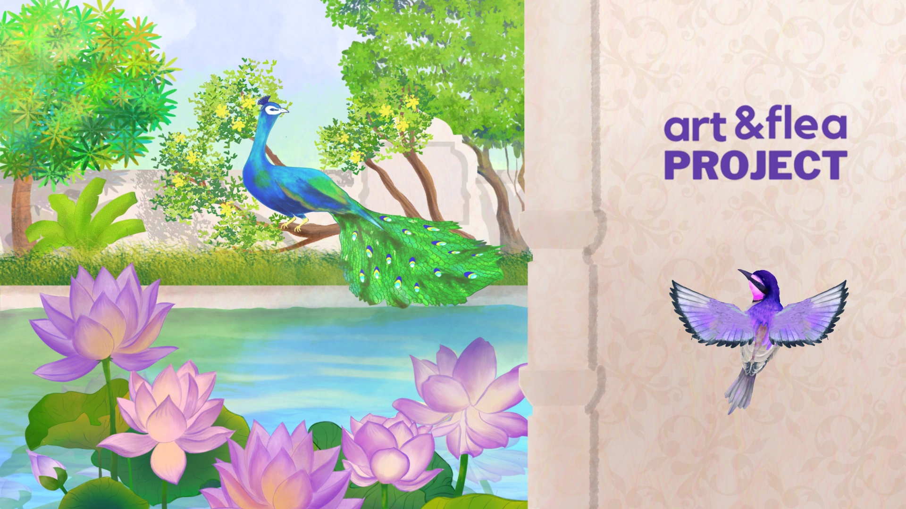
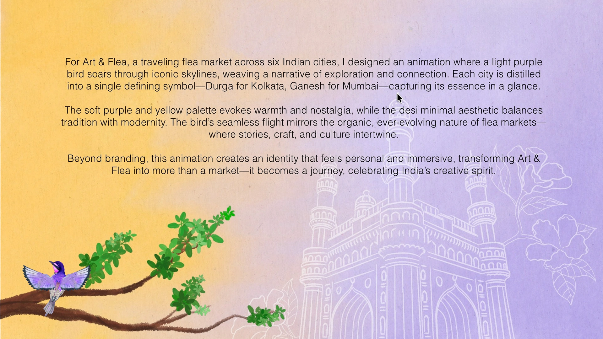
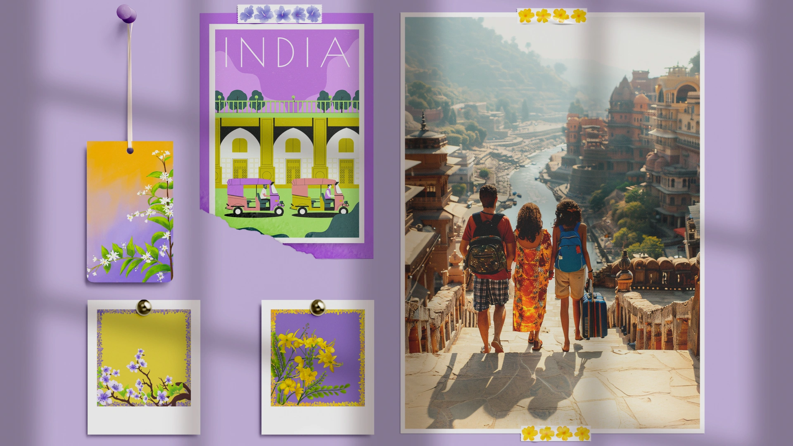
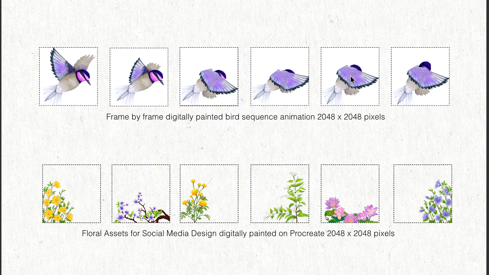
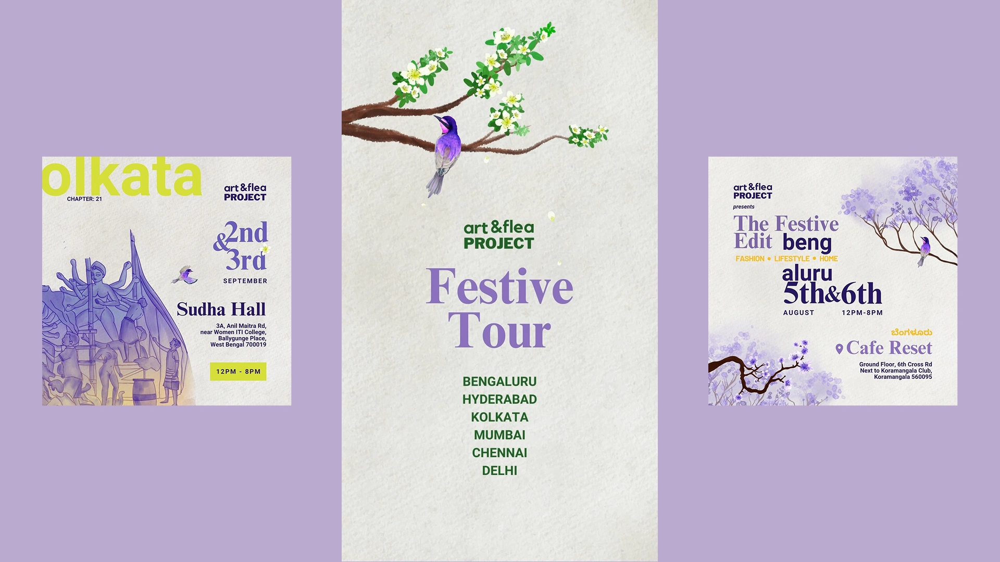

A travelling market needs one identity that still feels local in every city.
Each city already has its own festive symbol people love.
One lilac bird carries the brand; each city gets its own symbol, Durga for Kolkata, Ganesh for Mumbai.
Warm yellow meets soft purple: desi and minimal at once, across the whole tour.

A lilac bird carries Art & Flea across India. Every city gets one symbol: Durga for Kolkata, Ganesh for Mumbai. Warm yellow meets soft purple, desi and minimal at once.


